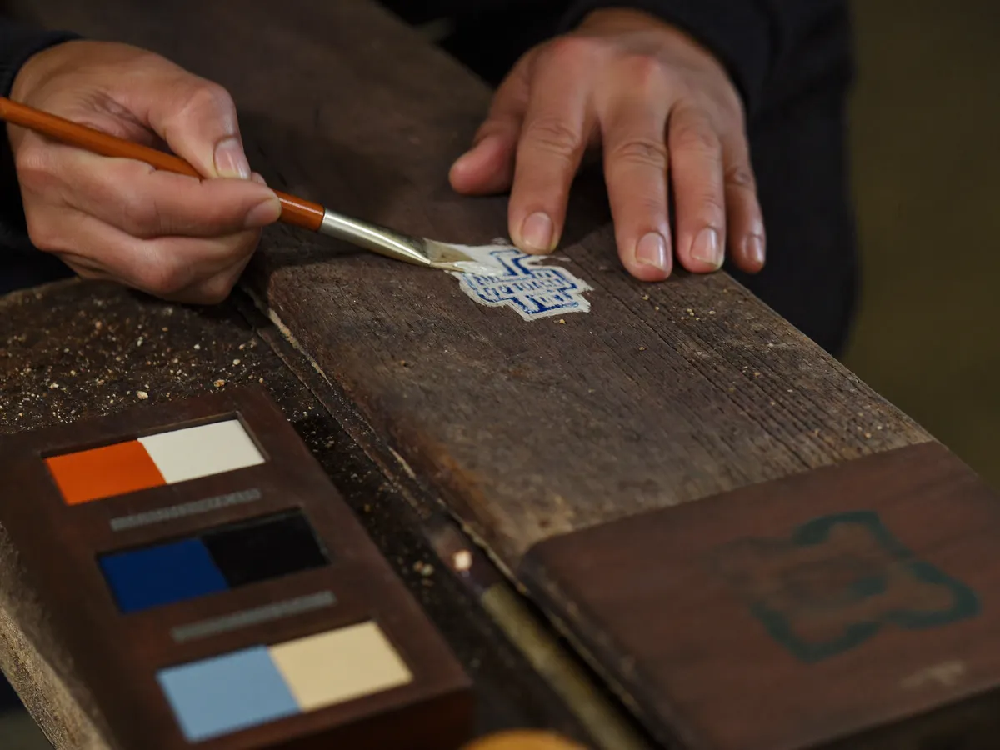

About Heriguard
국가유산을 지키는 손을 뒤에서 받칩니다
헤리가드공제조합은 국가유산 수리업체의 보증과 공제를 전담하는 비영리 상호부조 기관입니다.
Greeting
인사말
국가유산 수리는 한 번의 실수가 되돌릴 수 없는 손실이 되는 일입니다. 그만큼 현장은 신중하고, 절차는 무겁습니다.
헤리가드공제조합은 그 무거운 절차 가운데 '보증'을 맡아, 수리업체가 현금 담보의 부담 없이 수주하고 발주기관이 안심하고 계약할 수 있도록 돕습니다. 보증·공제·신용평가를 한곳에서 제공하며, 조합원이 낸 출자와 공제료가 다시 조합원의 안전망이 됩니다.
앞으로도 국가유산을 지키는 손을 조용히 뒤에서 받치는 조합이 되겠습니다. 감사합니다.
헤리가드공제조합 이사장

Mission
설립 목적
이행의 보증
수리공사 계약의 이행과 하자보수 의무를 보증해, 유산 수리가 중단 없이 완결되도록 합니다.
위험의 분담
현장의 사고와 배상 위험을 조합원이 함께 나눠, 한 업체의 사고가 폐업으로 이어지지 않게 합니다.
신뢰의 평가
재무와 실적을 공정하게 평가해, 성실한 업체가 더 나은 조건으로 보증받도록 기준을 세웁니다.
History
연혁
| 2012 | 헤리가드공제조합 설립 인가 · 창립 조합원 210개 사 |
| 2015 | 계약보증·하자보수보증 전자 발급 시스템 도입 |
| 2018 | 신용평가 정기평가 제도 시행 · 공제(보험) 사업 개시 |
| 2021 | 인터넷 영업점 개편 · 공동인증서 로그인 도입 |
| 2024 | 보증 잔액 8,000억 원 돌파 · 조합원 1,200개 사 |
| 2026 | 대외용 대표 홈페이지 개편 · 발급 사실 조회 서비스 강화 |
Organization
조직
Guarantee Div.
보증심사부
보증 신청 심사, 한도·요율 산정, 보증서 발급을 담당합니다.
Mutual Aid Div.
공제사업부
공제 가입 심사와 사고 보상, 현장 위험 평가를 담당합니다.
Support Div.
경영지원부
신용평가, 전산 운영, 고객지원과 대외 협력을 담당합니다.
Location
오시는 길
헤리가드공제조합
주소
(06600) 서울특별시 서초구 헤리가드로 74, 헤리가드빌딩 5층
(06600) 서울특별시 서초구 헤리가드로 74, 헤리가드빌딩 5층
대표전화 02-000-0074 · 팩스 02-000-0075
업무시간 평일 09:00 ~ 18:00 (점심 12:00 ~ 13:00) · 토·일·공휴일 휴무
교통 지하철 2호선 서초역 3번 출구 도보 5분 · 인근 공영주차장 이용